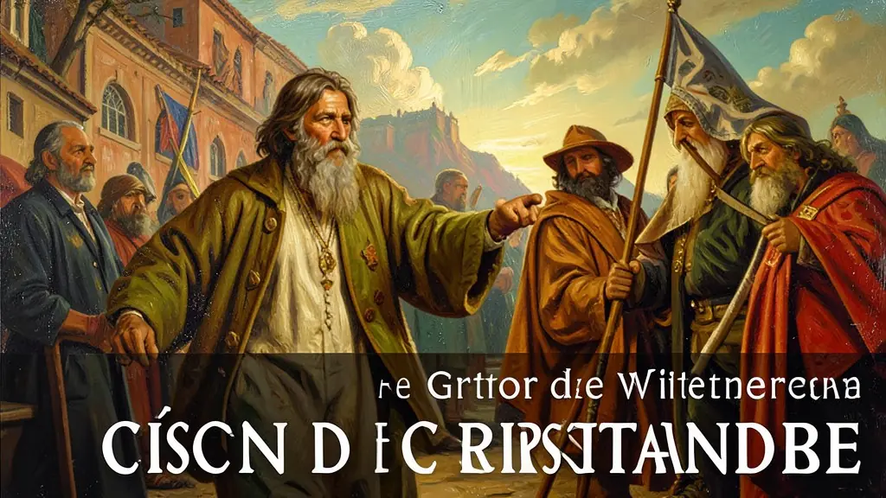
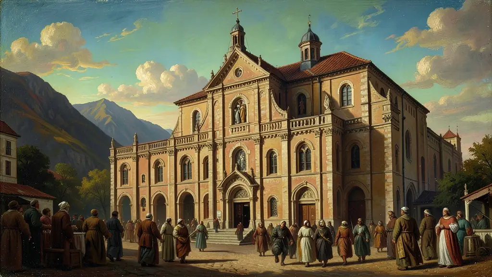

Capítulo 01
1. Martinho Lutero e o Grito de Wittenberg
Lutero não queria destruir a Igreja, queria limpá-la. Ele defendia três solas: *Sola Fide* (Apenas a Fé salva), *Sola Scriptura* (Apenas a Bíblia é regra) e *Sola Gratia* (Apenas a Graça divina). Ao negar que o Papa fosse infalível, Lutero deu ao indivíduo o poder de ler e interpretar a palavra sagrada, o que foi uma das maiores revoluções intelectuais da história ocidental.

Capítulo 02
2. Calvino e a Ética do Trabalho
João Calvino foi além de Lutero. Se Deus já decidiu quem vai para o céu, o homem deve viver uma vida de trabalho duro e moral rígida para honrar essa escolha. O lucro, antes visto pela Igreja como pecado (Usura), passou a ser um sinal de glória para o Calvinismo. Isso facilitou o crescimento da burguesia na Holanda, Inglaterra e EUA.
Capítulo 03
3. Anglicanismo: A Igreja do Rei
Henrique VIII precisava de um herdeiro homem e de dinheiro para seu reino. O Papa negou o divórcio de Catarina de Aragão, o que serviu de desculpa para o Rei assinar o 'Ato de Supremacia' (1534), tornando-se chefe supremo da Igreja na Inglaterra. O Anglicanismo manteve muitos ritos católicos, mas subordinou a religião aos interesses do Estado Britânico.

Capítulo 04
4. O Concílio de Trento e a Muralha Católica
A Igreja Católica não ficou parada. Entre 1545 e 1563, o Concílio de Trento reafirmou o poder do Papa, dos sete sacramentos e do culto aos santos. Criou-se o Seminário para formar padres mais sérios e cultos. A Inquisição passou a perseguir quem seguisse as ideias protestantes ou científicas (como Galileu), criando um clima de censura intelectual em países como Espanha e Portugal.
Capítulo 05
5. Jesuítas e Barroco: A Sedução da Fé
Inácio de Loyola fundou a Companhia de Jesus para ser a 'milícia de Cristo'. Os jesuítas foram os maiores educadores do mundo, fundando colégios e catequizando indígenas na América. Para reconquistar as massas que não sabiam ler, a Igreja investiu no estilo **Barroco**: igrejas cheias de ouro, cores vibrantes, música teatral e luz dramática. O objetivo era converter através dos sentidos e da emoção.
A Reforma Protestante do século XVI, iniciada com as 95 teses de Martinho Lutero, representou a quebra do monopólio espiritual e político da Igreja Católica na Europa Ocidental. Motivada por críticas à venda de indulgências e à corrupção clerical, a Reforma introduziu o conceito de 'salvação pela fé' e a livre interpretação das Escrituras. Esse processo não foi apenas teológico, mas também político, ao fortalecer o poder dos monarcas nacionais que desejavam se libertar da tutela do Papa.
O Calvinismo, em particular sua doutrina da predestinação, teve um impacto profundo no desenvolvimento do capitalismo. Segundo Max Weber, a valorização do trabalho, da parcimônia e do lucro como sinais de eleição divina criou uma 'ética protestante' que serviu de motor para a acumulação de capital e a modernização econômica. Ao substituir o ascetismo monástico pelo ascetismo mundano, o protestantismo transformou a vida profissional em um chamado espiritual, alterando permanentemente a mentalidade ocidental.
Para o Enem, é vital compreender a Reforma Protestante como o início do processo de secularização e pluralismo religioso na modernidade. A Contra-Reforma (Reforma Católica) buscou recuperar fiéis através do Concílio de Trento e da Companhia de Jesus, mas a unidade da cristandade europeia já estava irremediavelmente fragmentada. O estudo deste tema permite analisar como a religião e a política se entrelaçaram para moldar as estruturas de poder e as bases culturais dos Estados nacionais modernos.
Fonte: WEBER, Max. A Ética Protestante e o Espírito do Capitalismo. São Paulo: Companhia das Letras, 2004.
Atividades interativas
Questões para fixar
A doutrina da 'Predestinação absoluta', que afirmava que o destino da alma de cada pessoa já estava definido por Deus desde o nascimento, é a base teórica de qual religião reformada?
O Concílio de Trento (1545-1563) foi a resposta oficial da Igreja Católica à Reforma Protestante. Qual dessas medidas foi tomada pela Igreja nesse momento para conter o avanço das novas ideias?
Qual foi o principal motivo que levou Henrique VIII a criar o Anglicanismo?
Qual foi o resultado da tradução da Bíblia por Martinho Lutero para o alemão?
Qual foi a reação da Igreja Católica à Reforma Protestante?